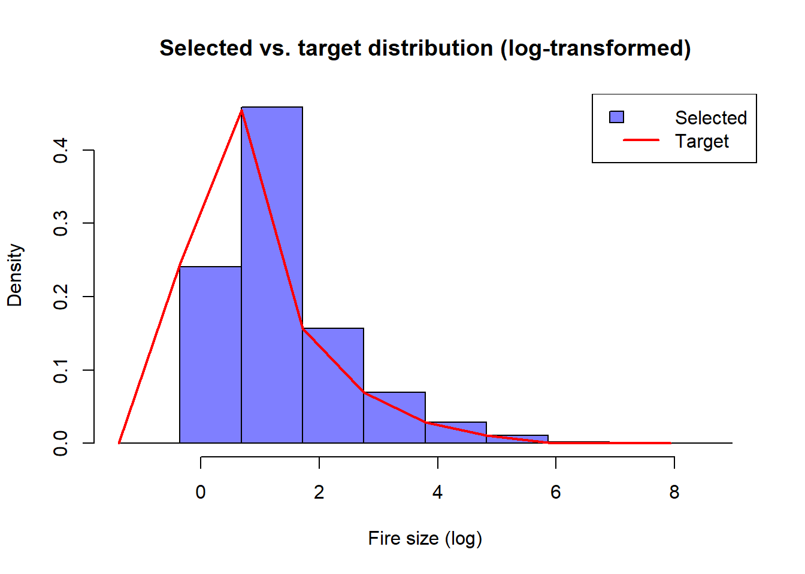

This demo illustrates how to use the algorithm devised to select simulated fire perimeters from FConstMTT simulations. The demo data includes a set of circa 345,000 fire perimeters simulated aroud the Picos de Europa National Park in Spain. The landscape file for the simulations was retrieved from the Pan-European fuel map server: An open-geodata portal for supporting fire risk assessment (https://doi.org/10.1016/j.geomat.2024.100036).
── Conflicts ────────────────────────────────────────── tidyverse_conflicts() ──
✖ dplyr::filter() masks stats::filter()
✖ dplyr::lag() masks stats::lag()
ℹ Use the conflicted package (<http://conflicted.r-lib.org/>) to force all conflicts to become errors
library(terra)
terra 1.7.83
Adjuntando el paquete: 'terra'
The following object is masked from 'package:tidyr':
extract
source('functions.R')
Retrieve simulated perimeters
Simulated perimeters are stored in a set of folders inside Sim. Each subfolder gather the simulations under a given fire-weather scenario and duration.
The usual way for selecting simulated perimeters is rooted in reproducing the historical fire regime. To do so, we need a collection of historical wildfires. These will be used to construct the target distribution and annualized burn probabilities. Furthermore, since the selecting algorithm weights each candidate perimeter according to its probability of occurrence, we need a spatial layer depicting this info. In this example we use a fire density layer built using a kernel density estimate from historical wildfires (ig_kde.tif). Both layers cen be found inside the Ignition folder.
To run the select_events function we must provide a series of parameters:
event_surfaces Numeric vector of surface values
event_probabilities Numeric vector of probabilities for each event
target_hist Numeric vector representing target histogram distribution
bins Numeric vector of bin breakpoints
reference_surface Numeric value for reference surface
surface_threshold Numeric value between 0 and 1 for surface threshold
max_it Integer for maximum iterations (default: 100)
logaritmic Logical for logarithmic binning (default: TRUE)
First, we retrieve event_surfaces and event_probabilities from sim_perimeters and probs, respectively. The first is obtained from the perimeter area attribute, the latter by overlaying perimeters into the probability raster layer.
# We discard very small fire perimeters (<0.05ha) to speed up calculations sim_perimeters <-filter(sim_perimeters, size >0.05)event_surfaces <- sim_perimeters$sizeevent_probabilities <- terra::extract(probs, sim_perimeters, fun ='median',na.rm=T)[, 2]
Create the target frequency size distribution
The core of the algorithm lies in reproducing a given distribution. The next step prepares the target bins and the target_distribution necessary to run select_events.
num_bins <-10# Variable to specify whether using regular (default) or log-transformed area size distributionsl <- T # TRUE -> log histogram; F -> regularif(l==T){# Log-transform `target_distribution` target_distribution <-log(fires_hist$size +1e-6) # +1e-6 para evitar log(0)# Adjust bin limits to the target distribution bins <-seq(min(c(log(event_surfaces +1e-6), target_distribution, na.rm =TRUE)),max(c(log(event_surfaces +1e-6), target_distribution, na.rm =TRUE)),length.out = num_bins +1)}else{ target_distribution <- (fires_hist$size) bins <-seq(min(c((event_surfaces), target_distribution, na.rm =TRUE)),max(c((event_surfaces), target_distribution, na.rm =TRUE)),length.out = num_bins +1)}target_hist <-hist(target_distribution, breaks = bins, plot =FALSE)$density
Running the selection algorithm
To speed up the iterative process, the base function was implemented to parallelize computations. Run as follows:
library(doParallel)
Warning: package 'doParallel' was built under R version 4.4.2
Cargando paquete requerido: foreach
Adjuntando el paquete: 'foreach'
The following objects are masked from 'package:purrr':
accumulate, when
Cargando paquete requerido: iterators
Cargando paquete requerido: parallel
num_cores <-detectCores() -1# Utilizar todos los núcleos menos unocl <-makeCluster(num_cores)registerDoParallel(cl)clusterExport(cl, list("calculate_discrepancy", "event_surfaces", "event_probabilities", "bins", "target_hist"))
Finally, we run the selection algorithm. It returns a results object that contains the index position of the selected perimeters, informing about the total number of selected events and the discrepancy from the target distribution:
# Parameterssreference_surface <-sum(fires_hist$size)/length(unique(fires_hist$Year)) #Average burned area by season in the historical periodsurface_threshold <-100# Number of fire seasons to be represented from the selected perimeterstolerance <-0.1## Ejecutar el algoritmo paralelizadoresult <-select_events(event_surfaces = event_surfaces,event_probabilities = event_probabilities,target_hist = target_hist,bins = bins,reference_surface = reference_surface,surface_threshold = surface_threshold,max_it =2,logaritmic = l,tolerance = tolerance)
# Visualize resultsif (!is.null(result$selected_surfaces)) { selected_surfaces <- result$selected_surfaces total_surface_selected <- result$total_surface final_discrepancy <- result$final_discrepancycat("Number of selected events:", length(selected_surfaces), "\n")cat("Total surface:", total_surface_selected, "\n")cat("Discrepancy:", final_discrepancy, "\n")if(l==T){ selected_hist <-hist(log(selected_surfaces +1e-6), breaks = bins, plot =FALSE)$density# Histogram comparisonhist(log(selected_surfaces +1e-6), breaks = bins, freq =FALSE, col =rgb(0, 0, 1, 0.5),main ="Selected vs. target distribution (log-transformed)",xlab ="Fire size (log)", ylab ="Density")lines(bins[-length(bins)], target_hist, type ="l", col ="red", lwd =2)legend("topright", legend =c("Selected", "Target"), fill =c(rgb(0, 0, 1, 0.5), NA), border =c("black", NA), col =c(NA, "red"), lty =c(NA, 1), lwd =c(NA, 2)) }else{ selected_hist <-hist((selected_surfaces), breaks = bins, plot =FALSE)$density# Histogram comparisonhist(selected_surfaces, breaks = bins, freq =FALSE, col =rgb(0, 0, 1, 0.5),main ="Selected vs. target distribution (log-transformed)",xlab ="Fire size (log)", ylab ="Density")lines(bins[-length(bins)], target_hist, type ="l", col ="red", lwd =2)legend("topright", legend =c("Selected", "Target"), fill =c(rgb(0, 0, 1, 0.5), NA), border =c("black", NA), col =c(NA, "red"), lty =c(NA, 1), lwd =c(NA, 2)) }} else {cat("Unable to solve the desired distribution.\n")}
Number of selected events: 17435
Total surface: 190382.8
Discrepancy: 0.008738675

For some unidentified reason, the current version selects repeated events. To get rid of duplicates run the following chunk:
Once the selection is over, we can build the burn probaility layer. A reference raster layer is required (the probability raster in this case).
template_raster <- probs # Template raster layer to compute BP# Vectorize and consolidate vector geometriesvector_file <- candidate_surfacespolygons_sf <-vect(vector_file)polygons_sf <-makeValid(polygons_sf)# Rasterize selected perimeters and count the times each pixel is burnedresult_raster <-rasterize(polygons_sf, template_raster, field =NA, fun ="count", background =0)# Annualize BP and plotplot(result_raster/(sum(candidate_surfaces$size)/reference_surface))